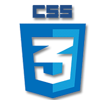

HTML 5
Para fazer a base de todo website, o HTML5 é utilizido para fazer a estrutura principal, onde pode-se utilizar marcações semânticas para o melhor desenvolvimento e visualizaçãoo do código,inserir o conteúdo primário, imagens, videos, áudios e muitos mais, é considerado uma linguagem de marcação pois não possui recursos para fazer interação com o usuário.

CSS 3
O CSS é utilizado para personalizar e aperfeiçoar o layout do site, proporcionando uma melhor experiência ao usuário.
Alterando fontes e tamanhos, cores, posicionamento, fundos e muito mais.
É muito imporante saber trabalhar com o CSS pois nele conseguimos encantar o usuário com formatações simple e até mesmo avançadas.
Git
Usando o git, pode-se controlar o histórico de versões de arquivos e projetos pequenos até grandes em suas linhas de código, proporcionando melhor desempenho para vários desenvolvedores poderem trabalhar no projeto ao mesmo tempo, dando maior segurança e efeciência no trabalho em equipe.
GitHub
É uma plataforma voltada para a área de TI,onde programadores e empresas podem hospedar o código fonte dos projetos e arquivos de maneira rápida e prática
Adobe Photoshop
Para edições e tratamento de fotos e imagens, a imaginação é o limite para poder criar materiais visuais fantásticos com este programa, além de auxiliar no desenvolvimento de profissionais da área UI/UX e os Dev's Front-end.